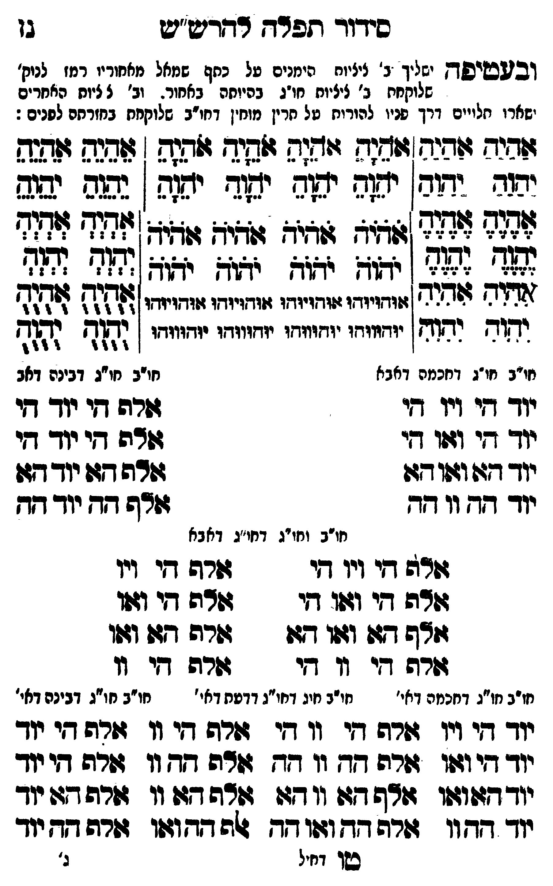

Neue Klartextfassung
(ובעטיפה ישליך ב' ציציות הימנים על כתף שמאל מאחוריו רמז לנוק' שלוקחת ב' ציציות חו"ג בהיותה באחור. וב' ציציות האחרים ישארו תלויים דרך פניו להורות על תרין מוחין דחו"ב שלוקחת בחזרתם לפנים:) === טבלה === [ימין — שני טורים] אַהַיַהַ אַהַיַהַ יַהַוַהַ יַהַוַהַ אֶהֶיֶהֶ אֶהֶיֶהֶ יֶהֶוֶהֶ יֶהֶוֶהֶ אִהִיִהִ אִהִיִהִ יִהִוִהִ יִהִוִהִ [אמצע — ארבעה טורים] אֹהֵיָהֵ אֹהֵיָהֵ אֹהֵיָהֵ אֹהֵיָהֵ יֹהֵוָהֵ יֹהֵוָהֵ יֹהֵוָהֵ יֹהֵוָהֵ אֹהֹיֹהֹ אֹהֹיֹהֹ אֹהֹיֹהֹ אֹהֹיֹהֹ יֹהֹוֹהֹ יֹהֹוֹהֹ יֹהֹוֹהֹ יֹהֹוֹהֹ אוּהוּיוּהוּ אוּהוּיוּהוּ אוּהוּיוּהוּ אוּהוּיוּהוּ יוּהוּווּהוּ יוּהוּווּהוּ יוּהוּווּהוּ יוּהוּווּהוּ [שמאל — שני טורים] אֵהֵיֵהֵ אֵהֵיֵהֵ יֵהֵוֵהֵ יֵהֵוֵהֵ אְהְיְהְ אְהְיְהְ יְהְוְהְ יְהְוְהְ אֻהֻיֻהֻ אֻהֻיֻהֻ יֻהֻוֻהֻ יֻהֻוֻהֻ === סוף טבלה === [חו"ב חו"ג דחכמה דאבא] יוד הי ויו הי יוד הי ואו הי יוד הא ואו הא יוד הה וו הה [חו"ב חו"ג דבינה דאבא] אלף הי יוד הי אלף הי יוד הי אלף הא יוד הא אלף הה יוד הה [חו"ב וחו"ג דחו"ג דאבא] === טבלה === אלף הי ויו הי אלף הי ויו אלף הי ואו הי אלף הי ואו אלף הא ואו הא אלף הא ואו אלף הי וו הי אלף הי וו === סוף טבלה === [חו"ב חו"ג דחכמה דאי'] יוד הי ויו יוד הי ואו יוד הא ואו יוד הה וו [חו"ב חו"ג דחו"ג דדעת דאי'] אלף הי וו הי אלף הי וו אלף הה וו הה אלף הה וו אלף הא וו הא אלף הא וו אלף הה ואו הה אלף הה ואו [חו"ב חו"ג דבינה דאי'] אלף הי יוד אלף הי יוד אלף הא יוד אלף הה יוד
Original gegen neue OCR · Niqqud für Vergleich ausgeblendet
Original
(ובעטיפהK118-001 ישליך ב'K118-002 ציציות הימנים עלK118-003 כתף שמאל מאחוריוK118-004 רמז לנוק' שלוקחתK118-005 ב' ציציות חו"ג בהיותה באחור.K118-006 וב' ציציותK118-007 האחרים ישארו תלוייםK118-008 דרך פניו להורות על תריןK118-009 מוחין דחו"ב שלוקחת בחזרתם לפנים:) === טבלה === [ימין — שני טורים] אהיה אהיה יהוה יהוה אהיה אהיה יהוה יהוה אהיה אהיה יהוה יהוה [אמצע — ארבעה טורים] אהיה אהיה אהיה אהיה יהוה יהוה יהוה יהוה אהיה אהיה אהיה אהיה יהוה יהוה יהוה יהוה אוהויוהו אוהויוהו אוהויוהו אוהויוהו יוהוווהו יוהוווהו יוהוווהו יוהוווהו [שמאל — שני טורים] אהיה אהיה יהוה יהוה אהיה אהיה יהוה יהוה אהיה אהיה יהוה יהוה === סוף טבלה === [חו"בK118-010 חו"ג דחכמה דאבא] יוד הי ויו הי יוד הי ואו הי יוד הא ואו הא יוד הה וו הה [חו"בK118-011 חו"ג דבינה דאבא] אלף היK118-012 יוד הי אלף היK118-013 יוד הי אלף האK118-014 יוד הא אלף ההK118-015 יוד הה [חו"בK118-016 וחו"ג דחו"ג דאבא] === טבלה === אלף היK118-017 ויו הי אלף היK118-018 ויו אלף הי ואו הי אלף הי ואו אלף הא ואו הא אלף הא ואו אלף היK118-019 וו הי אלף היK118-020 וו === סוף טבלה === [חו"בK118-021 חו"ג דחכמה דאי'] יוד הי ויו יוד הי ואו יוד הא ואו יוד הה וו [חו"ב חו"גK118-022 דחו"ג דדעת דאי'] אלף הי וו הי אלף הי וו אלף הה וו הה אלף הה וו אלף הא וו הא אלף הא וו אלף הה ואו הה אלף הה ואו [חו"בK118-023 חו"ג דבינה דאי'] אלף היK118-024 יוד אלף היK118-025 יוד אלף האK118-026 יוד אלף הה יודK118-027
OCR · fehlbar
סידוד תלדדך דדרט"ש גן ובבעטיפדזK118-001 ישליך נ'K118-002 ציציות הימנים טלK118-003 כתף (שמאל מאחודיוK118-004 רמז לניק' שלוקחחK118-005 ב' ציציות חו"ג בהיוחה ' באחור-K118-006 וב' ל ליוחK118-007 האחרים ישארו חליייםK118-008 דרך פניו להורוח טל חריןK118-009 מוחין דחו"ב שלוקחח בחזרחם לפנים: שהיד זזהנש[גושנגד זודגה גלסיד זלהנפ : אגג זזהנל מק דז. זזג. יז' יזזד: ילל ן אא צאצ לל לל: גזיז זזגיד זזתי זוזיד 728 73 ללאאללל יווז :וזז (צזח -יזו [ל4 [13 ז(דזש 9פדוד שזדויודו גזודזיווזז גזדזויודו זוזדויודו ללק 34 לדוש "[וח דחוף ן יידוווחו ייזוווזו יוחווודו יוווודו ן דגץ נד דך 6617 - :"זזו]ו חויבK118-010 חו"ג דחכמה דאבא חו"בK118-011 חו"ג דבינה דאבK118-012 יוד די ויו דו זדה חיK118-013 יוד די יודך דזי (פך קךי זדה די יוך דיK118-014 יוד דזוושודזו וזרה דג יודדזוK118-015 יוד דח וו דד זרף דד יוד דד חו"בK118-016 וחו"ג דחו"ג דאבא גוה דדיK118-017 ויו די זשרךש איK118-018 ויו דודה גגי וז(ו דדי דשדה דיK118-019 וו וום ד[זד 1זוו דגגו זשרודט גגך (זון זרה די זו די זרה דיK118-020 וו חו"בK118-021 חו"ג דחכמה דאי' חויב חיגK118-022 דחו"ג דדטת דאי' חו"בK118-023 חו"ג דבינה דאי'K118-024 יוד די ויו זזרה די יו דו דה די וו מזרה דיK118-025 יוד יודך די ודו זורה דח וו גץ וה זד וו זרה גי יודך יוךדץטושו גודה 27: ו1 גגו 4ודה דזו וו זורה דזד יוך יוך דדחוו גזרה דד וזזו דץ 4ה דדוגוו זרה דדK118-026 יוד שן דחיל ג'K118-027